Getting input from keyboard

In this lab, you are going to build
a simple interactive Java application, which gets user entered input
data from keyboard. You are going to read date from both command
line and through a dialog box.
Expected duration: 60 minutes


Software
Needed
Before you begin, you need to install required software (JDK and
NetBeans IDE) on your
computer as
described
here. Also download and unzip the hands-on lab file mentioned
below.
- Java Standard Development Kit (JDK™) version 6.0 Documentation
zip file (download)
- Scroll down the page until you see Java SE 6 Documentation. Download
the zip file.
- You can store the zip file in any location of your file system
- You do *not* need to unzip the file.
- You will add it to the NetBeans as described below.
Change Log
- Jan. 26th, 2007: Created
- Jan. 29th, 2007: Javadoc zip file URL location is updated.
- April 17th, 2008: JDK 6 and NetBeans 6.1 are used
- Jan. 10th, 2009: NetBeans 6.5 is used
- July 13th, 2010: Updated with NetBeans 6.9, Instruction of
downloading JDK 6 doc zip file is added (Sang Shin)
Lab Exercises
Exercise 0: Download JDK
1. Using your browser, go to
http://java.sun.com/javase/downloads/index.jsp
2. Scroll down the page and select Download button of the Java SE 6
Documentation.
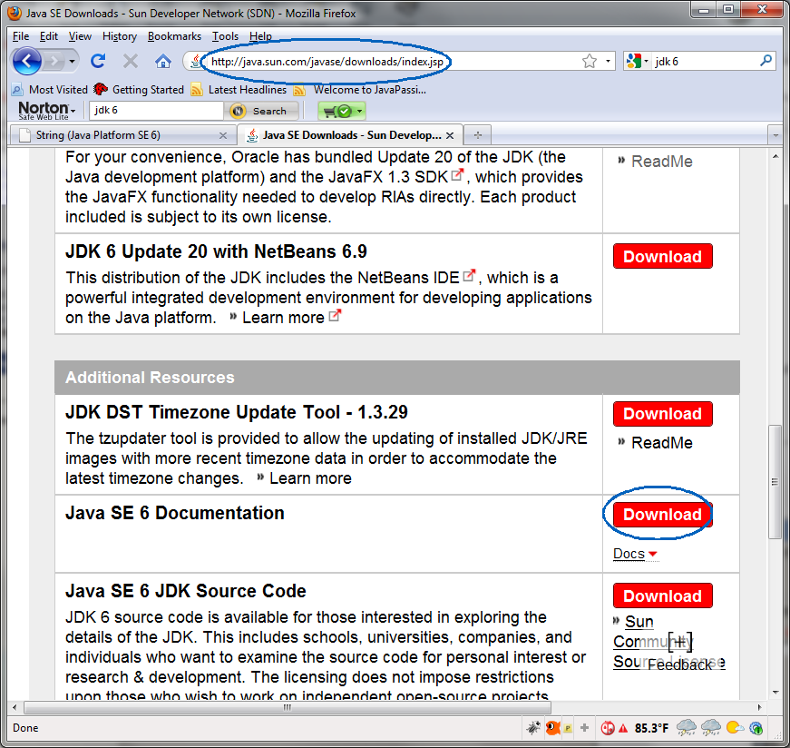

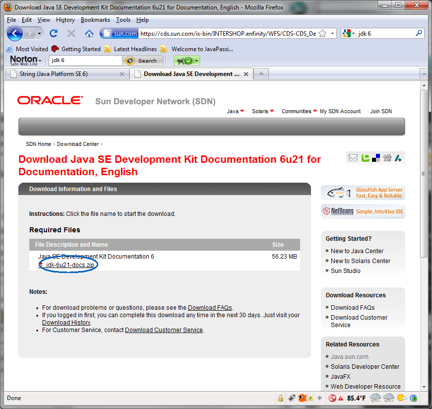
3. Save the file in a directory of your choice. The file name is
something like
jdk-6u18-docs.zip.
Exercise 1: Getting input from keyboard
via BufferedReader class
In this exercise, you are going to build
a simple interactive Java application, which gets user entered input
data from keyboard. The program will use BufferedReader and
InputStreamReader classes to receive the intput data. (You don't really
need to understand in detail how these classes work, however.)
You will also learn how to use Javadoc to get more information on Java
classes.
(1.1)
Build and run GetInputFromKeyboard Java program
1. Create a NetBeans project
- Select File from
top-level menu and
select New Project.
- Observe that the New Project
dialog box appears.
- Select Java under Categories section and Java Application under Projects section.
- Click Next.

- Under Name
and Location pane, for the Project
Name field, enter MyGetInputFromKeyboardProject.
- For the Create Main Class
field, enter GetInputFromKeyboard.
(Figure-1.10 below)
- Click Finish.
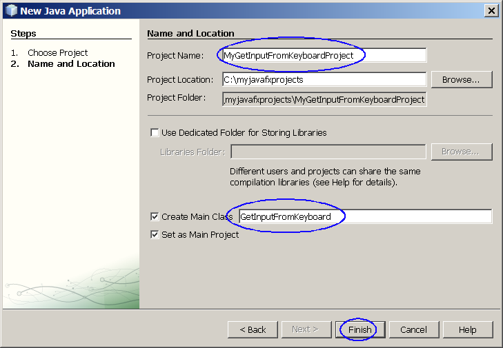
Figure-1.10: Create
MyGetInputFromKeyboardProject
- Observe that the MyGetInputFromKeyboardProject
project node is created
under Projects pane of the
NetBeans IDE and IDE generated GetInputFromKeyboard.java
is displayed in the editor window of the IDE.
2. Modify the IDE generated GetInputFromKeyboard.java as
shown in Code-1.11 below. Study the code by paying special attention to
the bold-fonted comments. For now, don't worry about the details
of the BufferedReader and InputStreamReader classes for now.
/*
* To change this template, choose Tools | Templates
* and open the template in the editor.
*/
import java.io.BufferedReader;
import java.io.IOException;
import java.io.InputStreamReader;
/**
*
* @author sang
*/
public class GetInputFromKeyboard {
/**
* @param args the command line arguments
*/
public static void main(String[] args) {
// Create BufferedReader object from
Standard input device.
// Standard input device is typically a keyborad.
BufferedReader dataIn = new
BufferedReader(new
InputStreamReader( System.in) );
// Prompt a user to enter his/her name
String name = "";
System.out.println("Please
Enter Your Name:");
// Read data into name variable
try{
name
= dataIn.readLine();
}catch( IOException e ){
System.out.println("Error!");
}
// Display the name
System.out.println("Hello "
+ name +"!");
}
}
|
Code-1.11: GetInputFromKeyboard.java
3. Build and run the program
- Right click MyGetInputFromKeyboardProject
and select Run.
- Observe that the program is expecting a user input.
- Type in your name, Sang Shin,
in this example uner the line of "Please
Enter Your Name:" in the Output
window and press Enter key.
Make sure you do not click Close Input. (Figure-1.12 below)
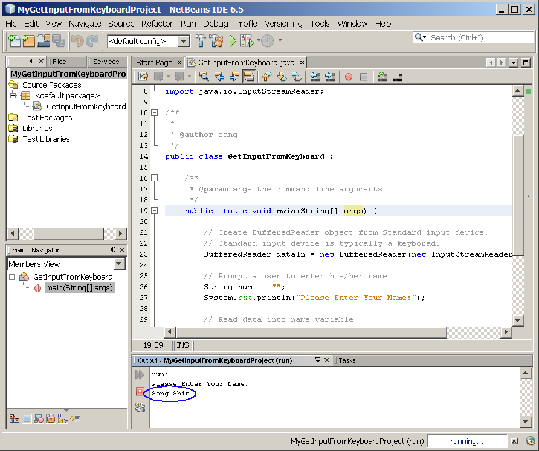
Figure-1.12: Enter value
- Observe that Hello <whatever
name you entered>, in this example Hello Sang Shin is displayed in the
Output window of the IDE. (Figure-1.13 and Figure-1.14 below)
Please Enter Your Name:
Sang Shin
Hello Sang Shin! |
Figure-1.13: Result
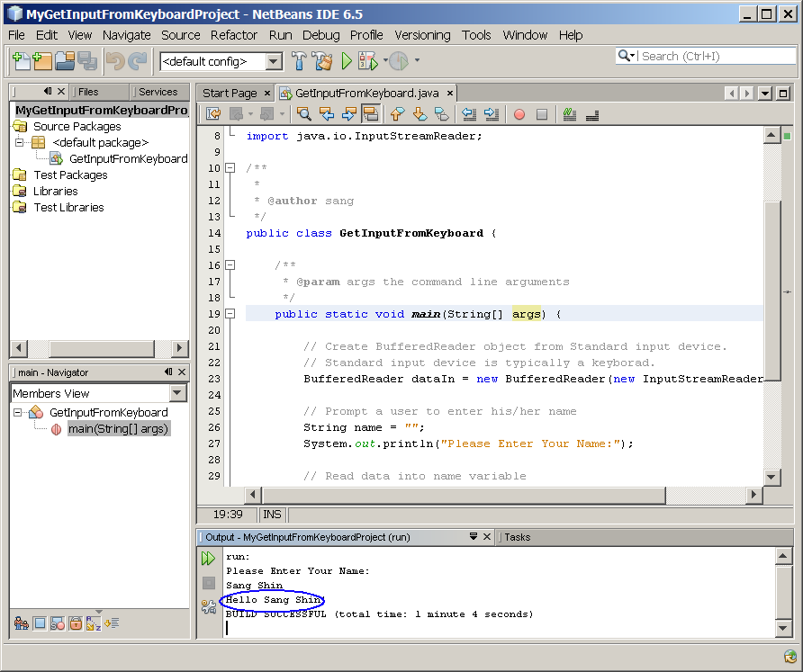
Figure-1.14: Display the data that was entered
4. Modify the
GetInputFromKeyboard.java
to read your age as shown in Code-1.15 below. The code fragment
that needs to be added is highlighted in
bold
and blue-colored font.
/*
* To change this template, choose Tools | Templates
* and open the template in the editor.
*/
import java.io.BufferedReader;
import java.io.IOException;
import java.io.InputStreamReader;
/**
*
* @author sang
*/
public class GetInputFromKeyboard {
/**
* @param args the command line arguments
*/
public static void main(String[] args) {
// Create BufferedReader
object from Standard input device.
// Standard input device is
typically a keyboard.
BufferedReader dataIn = new
BufferedReader(new
InputStreamReader( System.in) );
// Prompt a user to enter
his/her name
String name = "";
System.out.println("Please
Enter Your Name:");
// Read entered data into
name variable
try{
name
= dataIn.readLine();
}catch( IOException e ){
System.out.println("Error!");
}
// Display the name
System.out.println("Hello "
+ name +"!");
// Prompt a user to enter his/her age
String age= "";
System.out.println("Please Enter Your Age:");
// Read entered data into age variable
try{
age = dataIn.readLine();
}catch( IOException e ){
System.out.println("Error!");
}
// Display the name and age
System.out.println("Hello " + name +"!" + " " + "Your age is " + age);
}
}
|
Code-1.15: Add code to prompt a user to enter age
5. Build and run the program
- Right click MyGetInputFromKeyboardProject
and select Run.
- Observe that the program is expecting a user input.
- Type in your name, Sang Shin,
in this example and press Enter key.
Make sure you do not click Close Input.
- Type in your age, 100, in this example and press Enter key.
Make sure you do not lock Close Input.
- Observe that Hello <whatever
name you entered>, in this example Hello Sang Shin is displayed in the
Output window of the IDE. (Figure-1.16 below)
Please Enter Your Name:
Sang Shin
Hello Sang Shin!
Please Enter Your Age:
100
Hello Sang Shin! Your age is 100
|
Figure-1.16: Display of name and age
return to top of the exercise
(1.2)
Convert user entered "String" type value to "int" type value
Now suppose you want to add the
following logic to the
program.
If the entered age is over 100,
display
Hello <name>, you are old!
Otherwise
Hello <name>, you are young!
|
Notice in the previous code, your program received the age in the form
of
String type.
And you cannot compare String type "99" with
int primitive type of 100. In
other
words, you have to convert the
String
type of "99" to
int type
of 99
before you compare it against another
int
type 100.
Fortunately, there is a method called
parseInt()
in the
Integer class for
converting
String type into
int type.
1. See the
JavaDoc of
Integer class.
- From your browser, go to http://java.sun.com/j2se/1.6.0/docs/api/
- Observe that Javadoc root page gets dispayed.
- Scroll down in
order to see
the Integer class in the
lower left box.
- Click Integer.
- Observe that Javadoc of the Integer class gets displayed in the
right pane of the browser. (Figure-1.20 below)
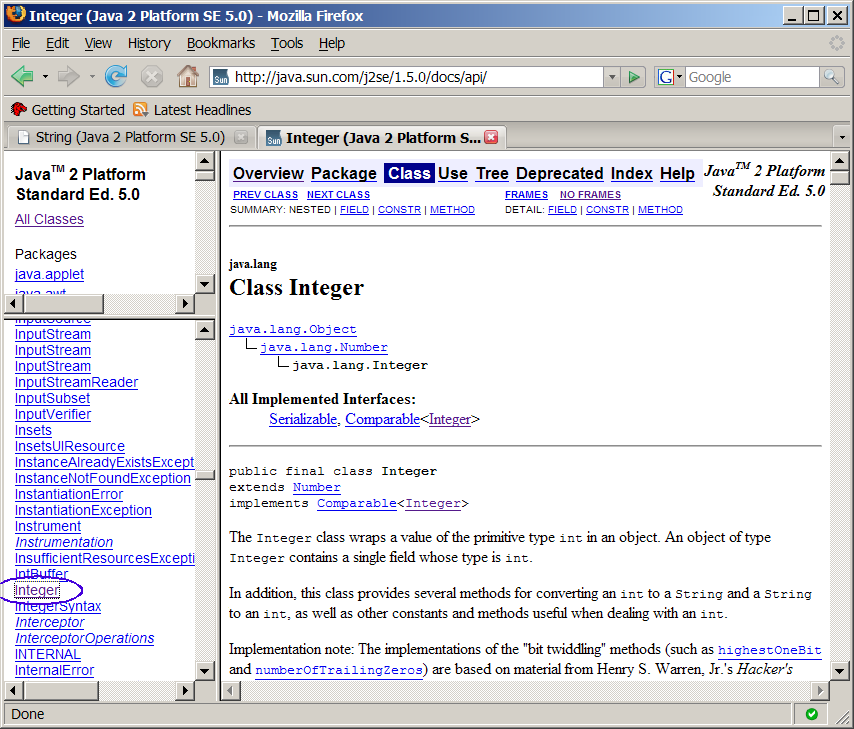
Figure-1.20: Javadoc of Integer class
- Scroll down to see the parseInt(String
s) method.
- Observe that it is a static method.
(Figure-1.21 below)
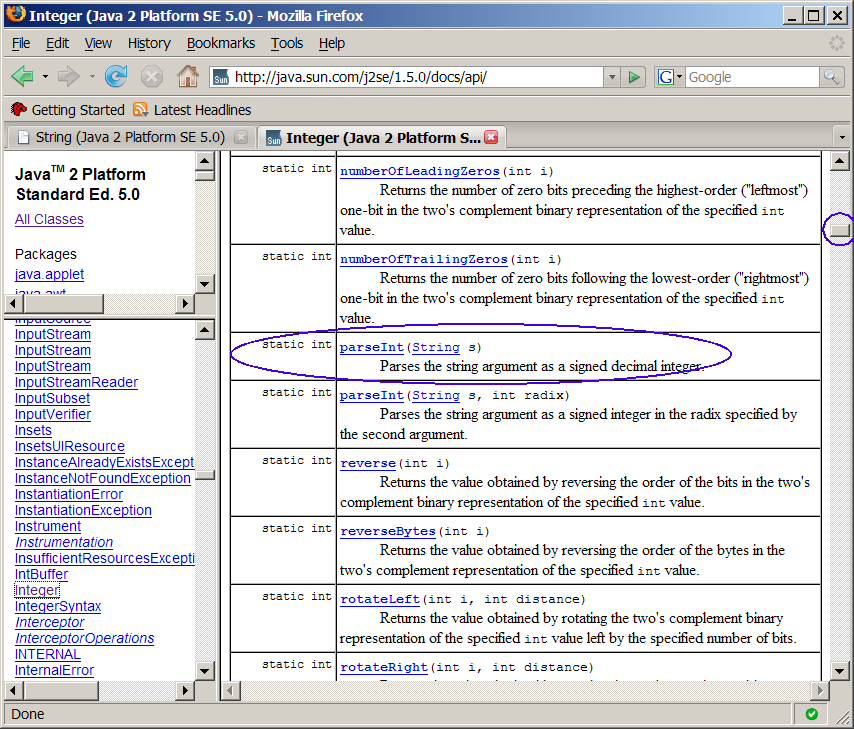
Figure-1.21: Javadoc of the parseInt(String s) method
- Click the hyperlink of the parseInt(String
s) method.
- Observe that the detail information of the method gets displayed.
(Figure-1.22 below)
- Note that the method throws NumberFormatException.
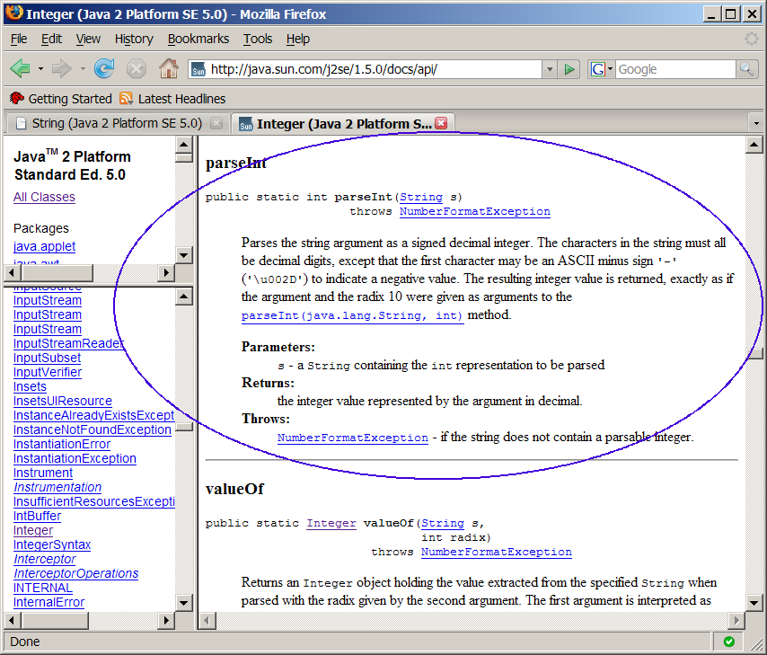
Figure-1.22: Detail information on parseInt(String s) method
2. Modify the
GetInputFromKeyboard.java
to read your age as shown in Code-1.23 below. The code fragment
that needs to be added is highlighted in
bold
and blue-colored font.
/*
* To change this template, choose Tools | Templates
* and open the template in the editor.
*/
import java.io.BufferedReader;
import java.io.IOException;
import java.io.InputStreamReader;
/**
*
* @author sang
*/
public class GetInputFromKeyboard {
/**
* @param args the command line arguments
*/
public static void main(String[] args) {
// Create BufferedReader
object from Standard input device.
// Standard input device is
typically a keyboard.
BufferedReader dataIn = new
BufferedReader(new
InputStreamReader( System.in) );
// Prompt a user to enter
his/her name
String name = "";
System.out.println("Please
Enter Your Name:");
// Read entered data into
name variable
try{
name
= dataIn.readLine();
}catch( IOException e ){
System.out.println("Error!");
}
// Display the name
System.out.println("Hello "
+ name +"!");
// Prompt a user to enter
his/her age
String age= "";
System.out.println("Please
Enter Your Age:");
// Read entered data into
age variable
try{
age
= dataIn.readLine();
}catch( IOException e ){
System.out.println("Error!");
}
// Display the name and age
System.out.println("Hello "
+ name +"!" + " " + "Your age is " + age);
// Convert the String type of age variable into int primitive type
variable ageint.
int ageint = Integer.parseInt(age);
// Now you can compare the int primitive type against int type value 100
if (ageint > 100){
System.out.println("Hello " + name +"!" + " " + "You are old.");
} else{
System.out.println("Hello " + name +"!" + " " + "You are young.");
}
}
}
|
Code-1.23: Modified GetInputFromKeyboard.java
5. Build and run the program
- Right click MyGetInputFromKeyboardProject
and select Run.
- Observe that the program is expecting a user input.
- Type in your name, Sang Shin,
in this example and press Enter key.
Make sure you do not click Close Input.
- Type in your age, 23, in
this example and press Enter key. Make sure you do not lock Close
Input.
- Observe that Hello <whatever
name you entered>, in this example Hello Sang Shin is displayed in the
Output window of the IDE.
- Observe that Hello Sang Shin!
You are young. is displayed. (Figure-1.24 below)
Please Enter Your Name:
Sang Shin
Hello Sang Shin!
Please Enter Your Age:
23
Hello Sang Shin! Your age is 23
Hello Sang Shin! You are young.
|
Figure-1.24: Result of running the application
return to top of
the exercise
(1.3)
Display Javadoc in a context-senstive manner within NetBeans IDE
In this exercise, you are going to see the Javadoc of the Integer class
in a context senstive fashion. Before taking this step, please
make sure you've download the Java Standard Development Kit (JDK™)
version 6.0 Documentation zip file (
download)
into a directory of your choice.
1. Add J2SE Development Kit Documentation 6.0 zip file to the NetBeans.
- Select Tools from
top-level menu and select Java
Platform. (Figure-1.31 below)
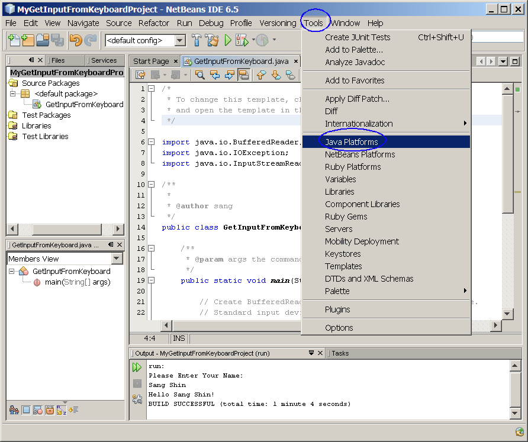
Figure-1.31: Open Java Platform Manager
- Observe that the Java Platform Manager dialog box appears.
- Click Javadoc tab.
- Click Add ZIP/Folder.
(Figure-1.32 below)
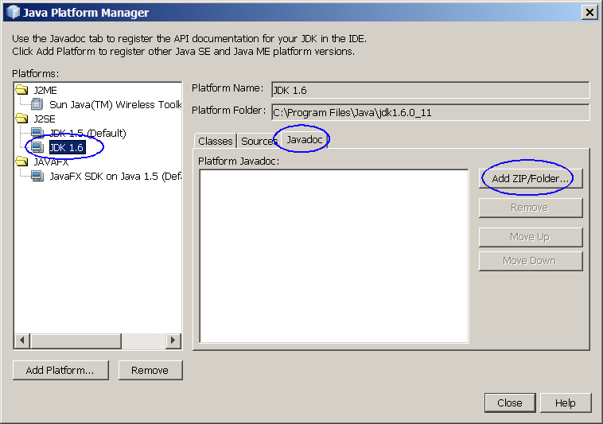
Figure-1.32: Add Javadoc file
- Observe that the Add ZIP/Folder dialog box appears.
- Browse down to the directory into which you have downloaded jdk-6-doc.zip.
- Select jdk-6-doc.zip
file and click Add ZIP/Folder.
(Figure-1.33 below)
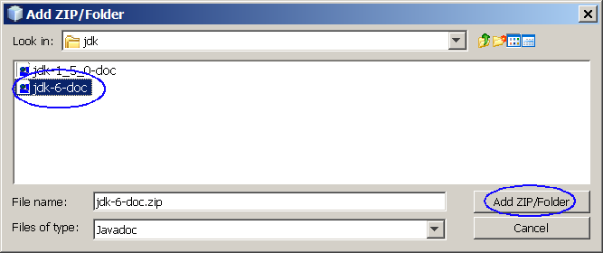
Figure-1.33: Select jdk-6-doc.zip file
- Observe that the jdk-6-doc.zip
file is now shown under Platform Javadoc section. (Figure-1.34 below)
- Click Close.
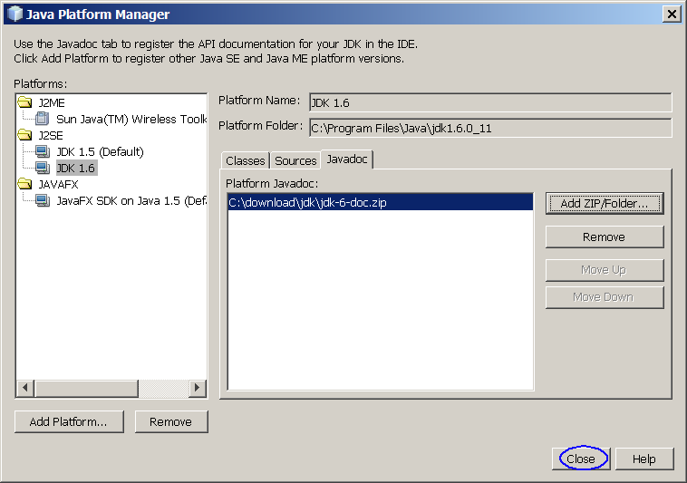
Figure-1.34:
jdk-1_5_0-doc.zip
file is added
2. Perform context-sensitive Javadoc.
- Move the cursor over Integer string
in the source editor of the NetBeans IDE.
- Select Show Javadoc.
(Figure-1.35 below)
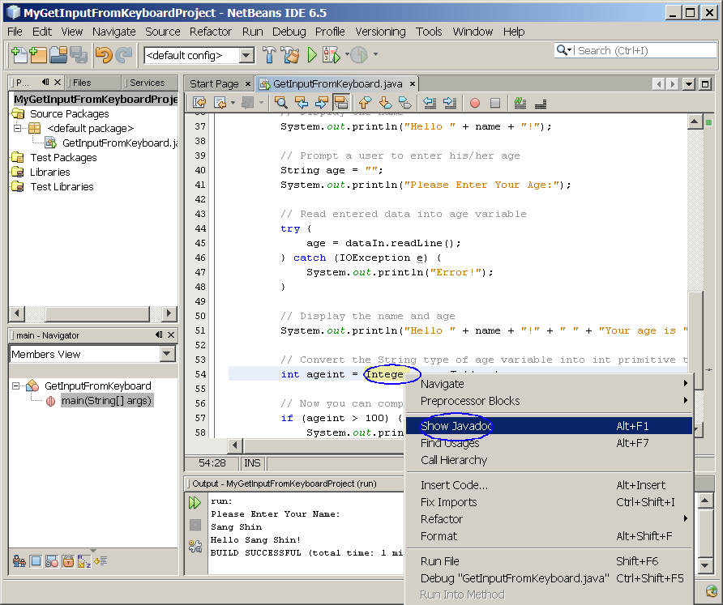
Figure-1.35: Show Javadoc on Integer
- Observe that the Javadoc of the Integer class gets displayed in
the browser (Figure-1.36 below)
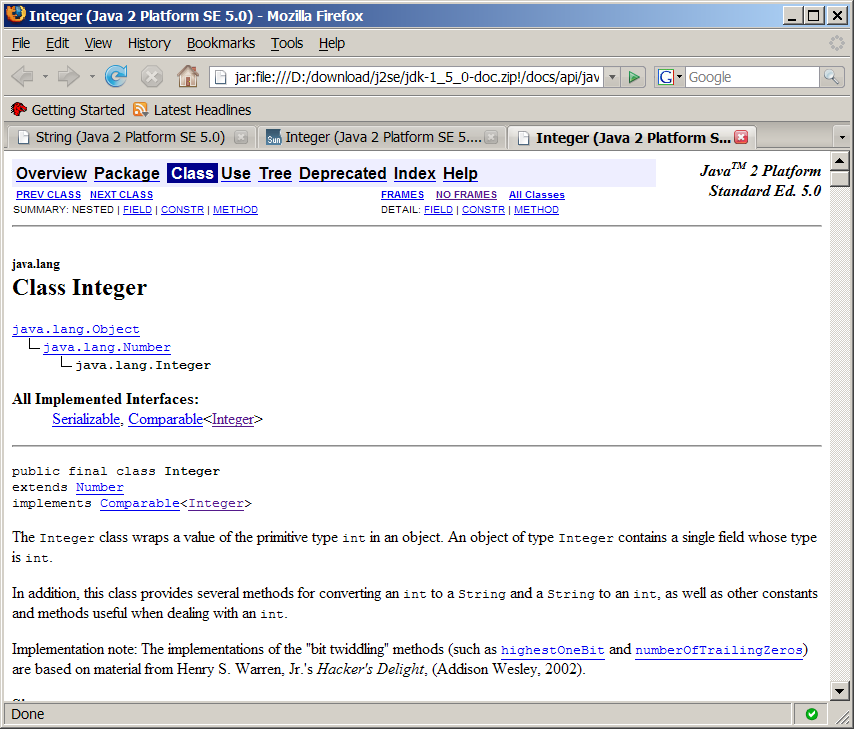
Figure-1.36: Javadoc of Integer class
- Display context-sensitive Javadoc on String class.
Summary
In this exercise, you learned how to read
data entered through a standard input device, keyboard. You also
learned how to use online version of Java documentation and how to
display Javadoc of a class through context-senstive manner.
Return
to the top
Exercise 2: Getting input from keyboard
via JOptionPane
In this exercise, you are going to build
the same application you built
in Exercise 1 but this time using JOptionPane
class.
- Build and run a Java program that uses conditional
operators
(2.1)
Build and run a Java program that uses conditional operators
1. Create a NetBeans project
- Select File from
top-level menu and
select New Project.
- Observe that the New Project
dialog box appears.
- Select Java under Categories section and Java Application under Projects section.
- Click Next.
- Under Name
and Location pane, for the Project
Name field, enter MyInputFromKeyboardJOptionPaneProject.
- For the Create Main Class
field, enter InputFromKeyboardJOptionPane.
- Click Finish.
- Observe that the MyInputFromKeyboardJOptionPaneProject
project node is created
under Projects pane of the
NetBeans IDE and IDE generated InputFromKeyboardJOptionPane.java
is displayed in the editor window of the IDE.
2. Modify the IDE generated InputFromKeyboardJOptionPane.java.
- Modify the InputFromKeyboardJOptionPane.java
as
shown in Code-2.21 below. The code fragments that need
to be added are highlighted in bold and blue-colored font.
import javax.swing.JOptionPane;
/*
* InputFromKeyboardJOptionPane.java
*
* Created on January 24, 2007, 10:46 AM
*
* To change this template, choose Tools | Template Manager
* and open the template in the editor.
*/
/**
*
* @author sang
*/
public class InputFromKeyboardJOptionPane {
/** Creates a new instance of
InputFromKeyboardJOptionPane */
public InputFromKeyboardJOptionPane() {
}
/**
* @param args the command line arguments
*/
public static void main(String[] args) {
String name = "";
name=JOptionPane.showInputDialog("Please enter your name");
String msg = "Hello " + name
+ "!";
JOptionPane.showMessageDialog(null, msg);
}
}
|
Code-2.21: Modified InputFromKeyboardJOptionPane.java
3. Build and run the program
- Right click MyInputFromKeyboardJOptionPaneProject
and select Run.
- Observe that Input dialog box appears.
- Enter your name, Sang Shin, in this example. (Figure-2.22 below)
- Click OK.
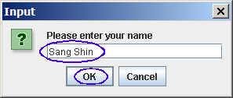
Figure-2.22: Enter name
- Observe that the message dialog box appears.
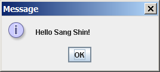
Figure-2.23: Message is displayed
Summary
In this exercise, you are going to build
the same application you built
in Exercise 1 but this time using JOptionPane
class.
return to the top
Homework
exercise
1. The homework is to modify the MyInputFromKeyboardJOptionPaneProject
project
above.
(You might want to create a
new project by copying
the MyGetInputFromKeyboardJOptionPaneProject
project.)
You can name the new project in any way you want but here I am going to
call to call it as MyGetInputFromKeyboardJOptionPaneProject2.
- Make
the program to ask the following question
- Display the entered age as following
- If the age is over 100, display
- Hello <name>, you are old!
- Otherwise
- Hello <name>, you are young!
- Zip file of the MyGetInputFromKeyboardJOptionPaneProject2
NetBeans project. (Someone else
should be able to open and run it as a NetBeans project.) You can
use your favorite zip utility or you can use "jar" utility that comes
with JDK as following.
- cd <parent directory that contains MyGetInputFromKeyboardJOptionPaneProject2
directory>
(assuming you named your project as MyGetInputFromKeyboardJOptionPaneProject2)
- jar cvf MyGetInputFromKeyboardJOptionPaneProject2.zip
MyGetInputFromKeyboardJOptionPaneProject2 (MyGetInputFromKeyboardJOptionPaneProject2 should
contain nbproject directory)
- Captured output screen -
name it as javainputkey.gif
or javainputkey.jpg (or
javainputkey.<whatever
graphics format>)
- Any screen capture that shows that your program is working is
good enough. No cosmetic polishment is required.
- If you decide to use
different IDE other than NetBeans, the zip
file should contain all the files that are needed for rebuilding the
project.